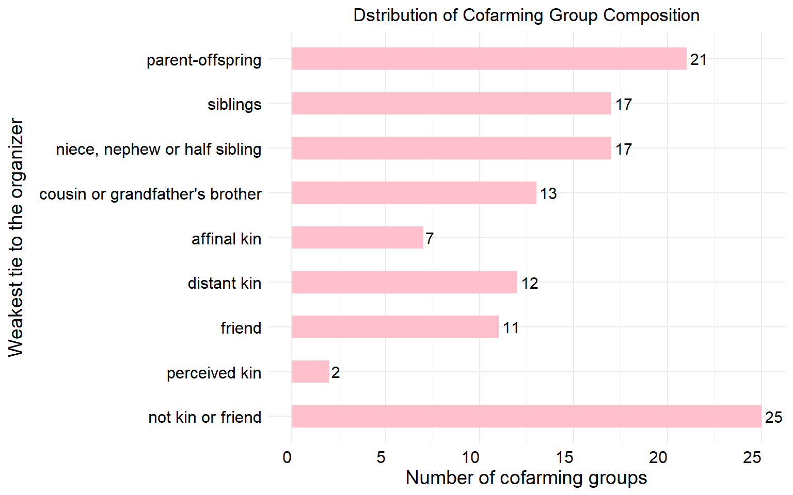
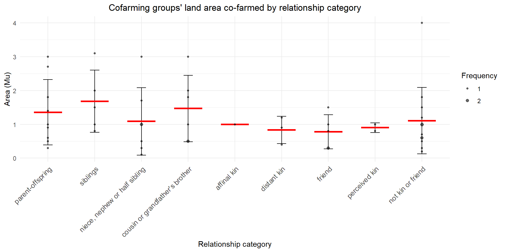
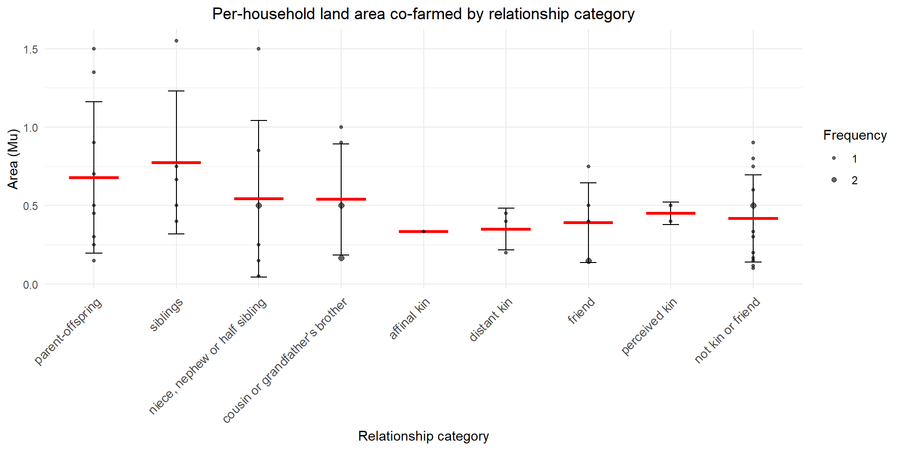
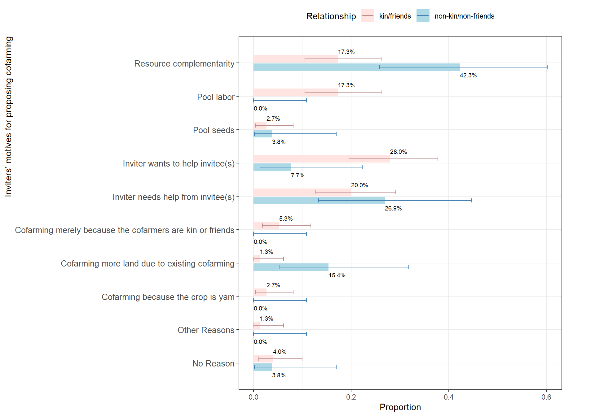
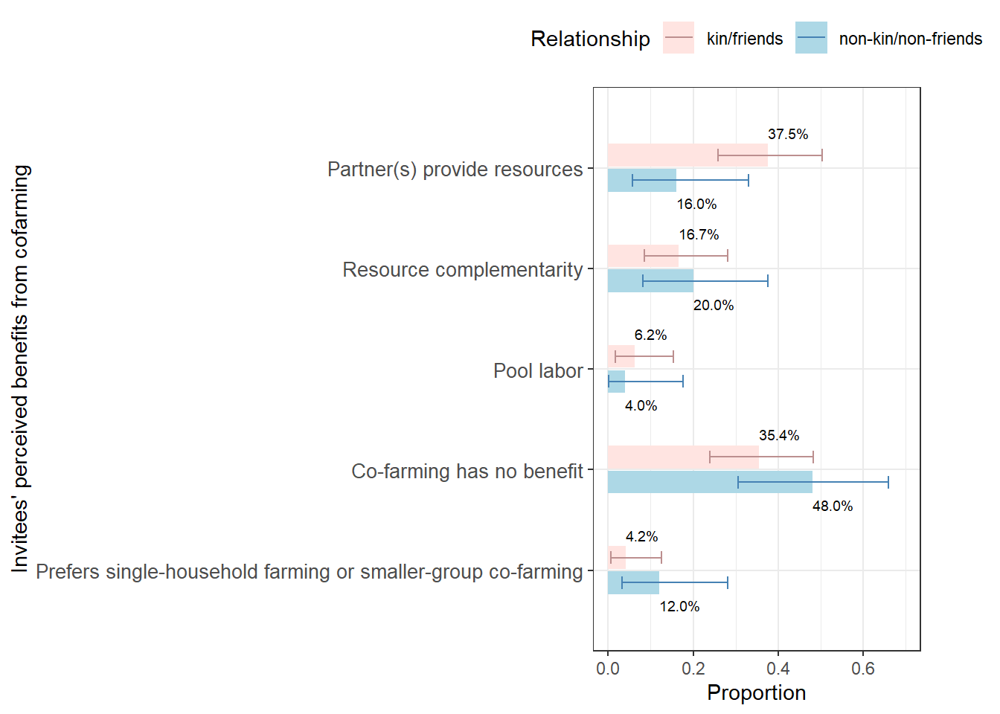
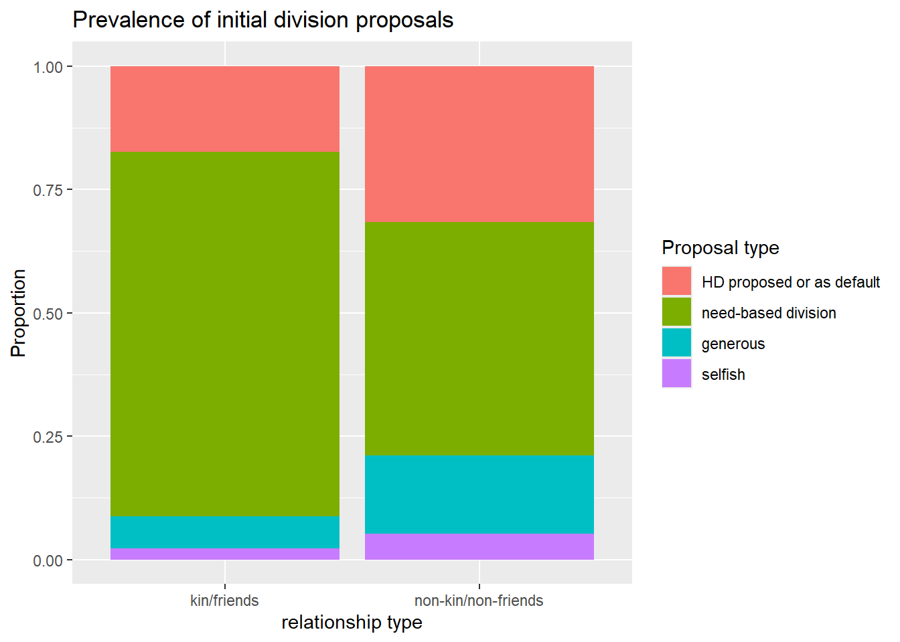
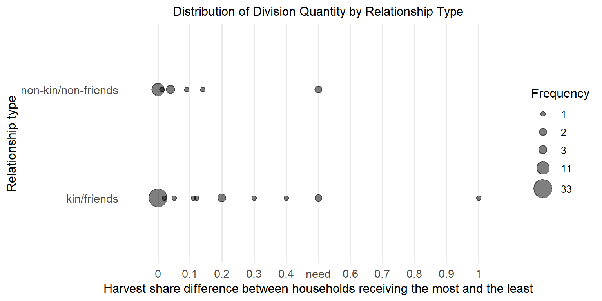

library(nnet)
library(openxlsx)
library(xtable)
library(dplyr)##
## Attaching package: 'dplyr'## The following objects are masked from 'package:stats':
##
## filter, lag## The following objects are masked from 'package:base':
##
## intersect, setdiff, setequal, unionlibrary(tidyr)
library(purrr)
#library(magrittr); requireNamespace("tidyr");
library(ggplot2)
library(ggpattern)## Warning: package 'ggpattern' was built under R version 4.5.3library(polycor)## Warning: package 'polycor' was built under R version 4.5.3library(data.table)##
## Attaching package: 'data.table'## The following object is masked from 'package:purrr':
##
## transpose## The following objects are masked from 'package:dplyr':
##
## between, first, lastlibrary(stringr)
library(stringi)
library(forcats)## Warning: package 'forcats' was built under R version 4.5.3library(here)## here() starts at C:/Users/miyan/ASU Dropbox/Minhua Yan/DDRIG/CFpartnerChoice/CF motivations benefits and division proposalslibrary(binom)## Warning: package 'binom' was built under R version 4.5.3library(scales)##
## Attaching package: 'scales'## The following object is masked from 'package:purrr':
##
## discardlibrary(rstatix)## Warning: package 'rstatix' was built under R version 4.5.3##
## Attaching package: 'rstatix'## The following object is masked from 'package:stats':
##
## filterlibrary(brms)## Warning: package 'brms' was built under R version 4.5.3## Loading required package: Rcpp## Loading 'brms' package (version 2.23.0). Useful instructions
## can be found by typing help('brms'). A more detailed introduction
## to the package is available through vignette('brms_overview').##
## Attaching package: 'brms'## The following object is masked from 'package:stats':
##
## ar
# dataframe of land farmed by each kin group
# prepare data
kin_area = kin %>%
filter(area != "NAPP" & div_no_NOorYAMorVEGGIE_diff != "NEED")
kin_area$area = as.numeric(kin_area$area)
kin_area$num_CF_HH <- as.numeric(as.character(kin_area$num_CF_HH))
kin_area <- kin_area %>%
mutate(area_perHH = area / num_CF_HH)# This next section creates plotting dataframes to plot area farmed per CFG
# Count frequency of each area value within each 'involves' group
kin_area_count_CFG <- kin_area %>%
group_by(involves, area) %>%
summarise(freq = n(), .groups = "drop")
# Compute mean and standard deviation per 'involves' group
summary_stats <- kin_area %>%
group_by(involves) %>%
summarise(
mean_area = mean(area),
sd_area = sd(area),
.groups = "drop"
)
# Merge data for plotting
df_plot1 <- left_join(kin_area_count_CFG, summary_stats, by = "involves")
df_plot1$involves <- factor(df_plot1$involves, levels = relation_order)
# Create the plot
ggplot(df_plot1, aes(x = involves)) +
# Error bars (±1 SD)
geom_errorbar(aes(ymin = mean_area - sd_area, ymax = mean_area + sd_area),
width = 0.2, color = "black") +
# Red horizontal line at mean (corrected)
geom_segment(aes(x = as.numeric(involves) - 0.3,
xend = as.numeric(involves) + 0.3,
y = mean_area,
yend = mean_area),
color = "red", linewidth = 1.2) +
# Scatter dots with size = frequency
geom_point(aes(y = area, size = sqrt(freq)),
alpha = 0.6) +
scale_size_continuous(
range = c(1, 2), # Radius: freq = 1 → 1 mm, freq = 2 → 2 mm
breaks = sqrt(c(1, 2)), # Legend: use sqrt(freq) values
labels = c(1, 2), # Show actual frequency values
name = "Frequency"
) +
labs(
title = "Cofarming groups' land area co-farmed by relationship category",
x = "Relationship category",
y = "Area (Mu)"
) +
theme_minimal() +
theme(axis.text.x = element_text(angle = 45, hjust = 1, size=10), plot.title = element_text(hjust = 0.5))
# This next section manipulates the data to plot area farmed per HH
# Count frequency of each area value within each 'involves' group
kin_area_count_HH <- kin_area %>%
group_by(involves, area_perHH) %>%
summarise(freq = n(), .groups = "drop")
# Compute mean and standard deviation per 'involves' group
summary_stats <- kin_area %>%
group_by(involves) %>%
summarise(
mean_area = mean(area_perHH),
sd_area = sd(area_perHH),
.groups = "drop"
)
# Merge data for plotting
df_plot2 <- left_join(kin_area_count_HH, summary_stats, by = "involves")
df_plot2$involves <- factor(df_plot2$involves, levels = relation_order)
# Create the plot
ggplot(df_plot2, aes(x = involves)) +
# Error bars (±1 SD)
geom_errorbar(aes(ymin = mean_area - sd_area, ymax = mean_area + sd_area),
width = 0.2, color = "black") +
# Red horizontal line at mean (corrected)
geom_segment(aes(x = as.numeric(involves) - 0.3,
xend = as.numeric(involves) + 0.3,
y = mean_area,
yend = mean_area),
color = "red", linewidth = 1.2) +
# Scatter dots with size = frequency
geom_point(aes(y = area_perHH, size = freq),
alpha = 0.6) +
scale_size_continuous(
range = c(1, 2), # Radius: freq = 1 → 1 mm, freq = 2 → 2 mm
breaks = sqrt(c(1, 2)), # Legend: use sqrt(freq) values
labels = c(1, 2), # Show actual frequency values
name = "Frequency"
) +
labs(
title = "Per-household land area co-farmed by relationship category",
x = "Relationship category",
y = "Area (Mu)"
) +
theme_minimal() +
theme(axis.text.x = element_text(angle = 45, hjust = 1, size=10), plot.title = element_text(hjust = 0.5))
df_CFPrsn = read.xlsx(here("CFP_reason.xlsx"), sheet=1)
# Remove substrings that include additional info: "()"
df_CFPrsn$organizer_RSN <- gsub(" \\(.*?\\)", "", df_CFPrsn$organizer_RSN)
# Vector of the column names to sort
cfp_cols <- paste0("CFP", 1:7)
# sort the CF partnerships based on CFP1 to CFP7
df_CFPrsn <- df_CFPrsn %>%
arrange(across(all_of(cfp_cols)))
df_inviterMotive <- df_CFPrsn %>%
filter(!is.na(organizer_RSN), organizer_RSN != "MISSING")# motives for an inviter to propose cofarming
reason_counts_by_rel <- df_inviterMotive %>%
# Step 1: split comma-separated RSN values into lists
mutate(RSN_split = str_split(organizer_RSN, ",")) %>%
# Step 2: unnest so each reason has its own row
unnest(RSN_split) %>%
# Step 3: trim spaces
mutate(RSN_split = str_trim(RSN_split)) %>%
# Step 4: count per reason and relationship type
count(RSN_split, relationship, name = "freq") %>%
arrange(RSN_split, relationship)
singletons <- reason_counts_by_rel %>%
group_by(RSN_split) %>%
summarise(total_freq = sum(freq, na.rm = TRUE), .groups = "drop") %>%
filter(total_freq == 1) %>%
pull(RSN_split)
# 2) Replace singletons with "Other reasons" and re-aggregate
reason_prop_by_rel <- reason_counts_by_rel %>%
mutate(
RSN_split = if_else(RSN_split %in% singletons, "Other reasons", RSN_split)
) %>%
group_by(RSN_split, relationship) %>%
summarise(freq = sum(freq, na.rm = TRUE), .groups = "drop") %>%
# 3) compute prop within each relationship
group_by(relationship) %>%
mutate(prop = round(freq / sum(freq, na.rm = TRUE), 3)) %>%
ungroup()
rsn_order = c("Resource complementarity", 'Pool labor', "Pool seeds", "Inviter wants to help invitee(s)", 'Inviter needs help from invitee(s)', 'Cofarming merely because the cofarmers are kin or friends', "Cofarming more land due to existing cofarming", "Cofarming because the crop is yam", "Other Reasons", "No Reason")
reason_prop_by_rel$RSN_split = stri_replace_all_regex(reason_prop_by_rel$RSN_split,
pattern=c('Complement','POOLLB',"POOLSEED",'HELPCFP','NEEDinput','Bond', 'EXISTCF', "YAM", "Other reasons", "NOREASON"),
replacement=rsn_order,
vectorize=FALSE)
reason_prop_with_err <- reason_prop_by_rel %>%
# Ensure the two keys exist and fill missing combos with freq = 0
complete(relationship, RSN_split, fill = list(freq = 0)) %>%
group_by(relationship) %>%
mutate(
n_total = sum(freq, na.rm = TRUE),
x = freq,
p = if_else(n_total > 0, x / n_total, NA_real_)
) %>%
rowwise() %>%
mutate(
CI_lower = if (n_total > 0) binom.confint(x, n_total, method = "exact", conf.level = 0.90)$lower else NA_real_,
CI_upper = if (n_total > 0) binom.confint(x, n_total, method = "exact", conf.level = 0.90)$upper else NA_real_
) %>%
ungroup() %>%
mutate(
prop_label = percent(p, accuracy = 0.1)
)
reason_prop_with_err <- reason_prop_with_err %>%
rename(rel_type = relationship)# preparation for plotting inviter motives
gaps <- paste0("<<gap_", seq_len(length(rsn_order) + 1), ">>")
# interleave: gap1, reason1, gap2, reason2, ..., gapN, reasonN, gapN+1
rsn_order_with_gaps <- as.vector(rbind(gaps[-length(gaps)], rsn_order))
rsn_order_with_gaps <- c(rsn_order_with_gaps, tail(gaps, 1))
# reverse so the first reason appears at TOP after coord_flip()
levels_with_gaps <- rev(rsn_order_with_gaps)
# --- build plotting data; keep factor THROUGH complete() ---
plot_dat2 <- reason_prop_with_err %>%
select(RSN_split, rel_type, prop, CI_lower, CI_upper) %>%
mutate(
RSN_split = factor(RSN_split, levels = levels_with_gaps),
rel_type = factor(rel_type, levels = c("Not kin or friend","Kin or friend"))
) %>%
complete(
RSN_split = factor(levels_with_gaps, levels = levels_with_gaps), # <- pass factor
rel_type = levels(rel_type),
fill = list(prop = 0)
) %>%
mutate(RSN_split = factor(RSN_split, levels = levels_with_gaps),
rel_type = factor(rel_type, levels = c("Not kin or friend","Kin or friend"))) # reassert
eps <- 0.001 # tiny visible height for zeros
show_err <- c("Resource complementarity", 'Pool labor', "Pool seeds", "Inviter wants to help invitee(s)", 'Inviter needs help from invitee(s)', 'Cofarming merely because the cofarmers are kin or friends', "Cofarming more land due to existing cofarming", "Cofarming because the crop is yam", "Other Reasons", "No Reason")
plot_dat2 <- plot_dat2 %>%
mutate(prop_plot = if_else(prop == 0, eps, as.numeric(prop))) %>%
mutate(
show_err = !grepl("^<<gap_\\d+>>$", RSN_split) & as.character(RSN_split) %in% show_err,
CI_lower_plot = ifelse(show_err, CI_lower, NA_real_),
CI_upper_plot = ifelse(show_err, CI_upper, NA_real_)
) %>%
mutate(RSN_split = factor(RSN_split, levels = levels_with_gaps),
rel_type = factor(rel_type, levels = c("Not kin or friend","Kin or friend"))) # reassert
# helper to hide gap labels
axis_lab <- function(x) ifelse(grepl("^<<gap_\\d+>>$", x), "", x)## Warning: `position_dodge()` requires non-overlapping x intervals.
# fisher's exact test for whether the prevalance of a reason differs based on relationship type
results <- reason_prop_with_err %>%
group_by(RSN_split) %>%
summarise(
test = list({
# Build 2×2 table for this reason
tab <- matrix(
c(
sum(freq[rel_type == "Kin or friend"]), # successes in kin/friend
unique(n_total[rel_type == "Kin or friend"]) - sum(freq[rel_type == "Kin or friend"]), # failures in kin/friend
sum(freq[rel_type == "Not kin or friend"]), # successes in not kin/friend
unique(n_total[rel_type == "Not kin or friend"]) - sum(freq[rel_type == "Not kin or friend"]) # failures in not kin/friend
),
nrow = 2,
byrow = TRUE,
dimnames = list(
rel_type = c("Kin/friend", "Not kin/friend"),
outcome = c("Reason present", "Reason absent")
)
)
fisher.test(tab) # use exact test (robust with small n and 0’s)
}),
.groups = "drop"
) %>%
mutate(
p_value = map_dbl(test, ~ .x$p.value),
estimate = map_dbl(test, ~ ifelse(is.null(.x$estimate), NA_real_, .x$estimate)),
conf_low = map_dbl(test, ~ ifelse(is.null(.x$conf.int), NA_real_, .x$conf.int[1])),
conf_high = map_dbl(test, ~ ifelse(is.null(.x$conf.int), NA_real_, .x$conf.int[2]))
) %>%
select(-test)
results## # A tibble: 10 × 5
## RSN_split p_value estimate conf_low conf_high
## <chr> <dbl> <dbl> <dbl> <dbl>
## 1 Cofarming because the crop is yam 1 Inf 0.0645 Inf
## 2 Cofarming merely because the cofarmers a… 0.570 Inf 0.227 Inf
## 3 Cofarming more land due to existing cofa… 0.0150 0.0767 0.00150 0.826
## 4 Inviter needs help from invitee(s) 0.582 0.681 0.219 2.28
## 5 Inviter wants to help invitee(s) 0.0547 4.61 0.993 43.7
## 6 No Reason 1 1.04 0.0794 56.8
## 7 Other Reasons 1 Inf 0.00890 Inf
## 8 Pool labor 0.0193 Inf 1.16 Inf
## 9 Pool seeds 1 0.688 0.0344 42.0
## 10 Resource complementarity 0.0155 0.290 0.0966 0.865# Distribution of non-organizers' reported benefits of CF compared to IF
df_CFPbnft = df_CFPrsn %>%
filter(!is.na(invitee_benefit), invitee_benefit != "MISSING") %>%
mutate(invitee_benefit = recode(invitee_benefit,
"PRFIF" = "PRFIForLSHH",
"PRFLSHH" = "PRFIForLSHH"))
benefit_by_rel <- df_CFPbnft %>%
# Step 0: remove information about which respondent reported which benefit
mutate(invitee_benefit = gsub("SB[^:]+: ", "", invitee_benefit)) %>%
# Step 1: split comma-separated benefits values into lists
mutate(BNFT_split = str_split(invitee_benefit, ";")) %>%
# Step 2: unnest so each reason has its own row
unnest(BNFT_split) %>%
# Step 3: trim spaces
mutate(BNFT_split = str_trim(BNFT_split)) %>%
# Step 4: relationship is already coded as "Kin or friend" / "Not kin or friend"
rename(rel_type = relationship) %>%
# Step 5: count per reason and relationship type
count(BNFT_split, rel_type, name = "freq") %>%
arrange(BNFT_split, rel_type) %>%
# 3) compute prop within each relationship
group_by(rel_type) %>%
mutate(prop = round(freq / sum(freq, na.rm = TRUE), 3)) %>%
ungroup()
bnft_order = c("Partner(s) provide resources","Resource complementarity",'Pool labor', "Co-farming has no benefit", "Prefers single-household farming or smaller-group co-farming")
benefit_by_rel$BNFT_split = stri_replace_all_regex(benefit_by_rel$BNFT_split,
pattern=c('INPUT','Ecological Complementarity','POOLLB','NOBNFT','PRFIForLSHH'),
replacement=bnft_order,
vectorize=FALSE)
benefit_prop_with_err <- benefit_by_rel %>%
complete(rel_type, BNFT_split, fill = list(freq = 0)) %>%
group_by(rel_type) %>%
mutate(
n_total = sum(freq, na.rm = TRUE),
x = freq,
p = if_else(n_total > 0, x / n_total, NA_real_)
) %>%
rowwise() %>%
mutate(
CI_lower = if (n_total > 0) binom.confint(x, n_total, method = "exact", conf.level = 0.90)$lower else NA_real_,
CI_upper = if (n_total > 0) binom.confint(x, n_total, method = "exact", conf.level = 0.90)$upper else NA_real_
) %>%
ungroup() %>%
mutate(
prop_label = percent(p, accuracy = 0.1)
)## plotting for invitees' perceived benefits
gaps <- paste0("<<gap_", seq_len(length(bnft_order) + 1), ">>")
bnft_order_with_gaps <- as.vector(rbind(gaps[-length(gaps)], bnft_order))
bnft_order_with_gaps <- c(bnft_order_with_gaps, tail(gaps, 1))
levels_with_gaps <- rev(bnft_order_with_gaps)
# --- build plotting data from benefit_prop_with_err instead of benefit_by_rel ---
plot_dat <- benefit_prop_with_err %>%
select(BNFT_split, rel_type, p, CI_lower, CI_upper) %>% # <- added CI columns
mutate(
BNFT_split = factor(BNFT_split, levels = levels_with_gaps),
rel_type = factor(rel_type, levels = c("Not kin or friend", "Kin or friend"))
) %>%
complete(
BNFT_split = factor(levels_with_gaps, levels = levels_with_gaps),
rel_type = levels(rel_type),
fill = list(p = 0)
) %>%
mutate(
BNFT_split = factor(BNFT_split, levels = levels_with_gaps),
rel_type = factor(rel_type, levels = c("Not kin or friend", "Kin or friend"))
)
eps <- 0.001
# define which benefits get error bars (all real ones)
show_err <- bnft_order # <- show error bars for all benefits
plot_dat <- plot_dat %>%
mutate(prop_plot = if_else(p == 0, eps, as.numeric(p))) %>%
mutate(
show_err = !grepl("^<<gap_\\d+>>$", BNFT_split) & as.character(BNFT_split) %in% show_err,
CI_lower_plot = ifelse(show_err, CI_lower, NA_real_),
CI_upper_plot = ifelse(show_err, CI_upper, NA_real_)
) %>%
mutate(
BNFT_split = factor(BNFT_split, levels = levels_with_gaps),
rel_type = factor(rel_type, levels = c("Not kin or friend", "Kin or friend"))
)
axis_lab <- function(x) ifelse(grepl("^<<gap_\\d+>>$", x), "", x)
ggplot(plot_dat, aes(x = BNFT_split, y = prop_plot, fill = rel_type)) +
geom_col(
data = dplyr::filter(plot_dat, !grepl("^<<gap_\\d+>>$", BNFT_split)),
position = position_dodge(width = 1), width = 0.9
) +
geom_col(
data = dplyr::filter(plot_dat, grepl("^<<gap_\\d+>>$", BNFT_split)),
position = position_dodge(width = 1), width = 1, alpha = 0
) +
geom_text(
data = dplyr::filter(plot_dat, !grepl("^<<gap_\\d+>>$", BNFT_split)),
aes(
label = scales::percent_format(accuracy = 0.1)(p),
hjust = ifelse(rel_type == "Kin or friend", 0, 0)
),
position = position_dodge(width = 2.8),
vjust = 0.5,
size = 2.5
) +
# error bars <- new
geom_errorbar(
data = dplyr::filter(plot_dat, !grepl("^<<gap_\\d+>>$", BNFT_split) & show_err),
aes(
x = BNFT_split,
ymin = CI_lower_plot,
ymax = CI_upper_plot,
color = rel_type,
group = rel_type
),
position = position_dodge(width = 1),
width = 0.5,
linewidth = 0.5,
inherit.aes = FALSE
) +
coord_flip() +
ylim(0, 0.7) +
scale_x_discrete(
limits = levels_with_gaps,
breaks = bnft_order,
labels = axis_lab,
drop = FALSE
) +
labs(x = "Invitees' perceived benefits from cofarming", y = "Proportion", fill = "Relationship", color = "Relationship") +
scale_fill_manual(
values = c(
"Kin or friend" = "mistyrose",
"Not kin or friend" = "lightblue"
),
labels = c(
"Kin or friend" = "kin/friends",
"Not kin or friend" = "non-kin/non-friends"
)
) +
scale_color_manual(
values = c(
"Kin or friend" = "rosybrown",
"Not kin or friend" = "steelblue"
),
labels = c(
"Kin or friend" = "kin/friends",
"Not kin or friend" = "non-kin/non-friends"
)
) +
theme_bw() +
theme(
axis.text.y = element_text(size = 10),
legend.position = "top",
legend.direction = "horizontal",
plot.margin = margin(t = 5, r = 40, b = 5, l = 5) # <- increase r to push right edge out
) +
guides(
fill = guide_legend(reverse = TRUE),
color = guide_legend(reverse = TRUE)
)## Warning: `position_dodge()` requires non-overlapping x intervals.
# #
# # Define which reasons/benefits indicate "invitee benefited"
# inviter_benefit_reasons <- c(
# "Complement", # = Resource complementarity from inviter's perspective
# "Help Invitee(s)", # = Inviter wants to help invitee(s)
# "Pool Labor",
# "Pool Seeds"
# )
#
# invitee_benefit_reasons <- c(
# "Ecological Complementarity", # = Resource complementarity from invitee's perspective
# "Partner(s) Provide Inputs", # = Partner(s) provide resources
# "Pool Labor"
# )
#
# # --- Compute counts per rel_type ---
#
# # From inviter's perspective: how many cofarming groups did the inviter
# # believe the invitee benefited, out of all groups in that rel_type
# inviter_counts <- reason_prop_by_rel %>%
# group_by(rel_type) %>%
# summarise(
# # total number of cofarming groups (unique dyads), i.e. denominator
# n_total = sum(freq[RSN_split == first(RSN_split)]), # any one reason gives n
# # number where inviter believed invitee benefited (any of the benefit reasons)
# x = sum(freq[RSN_split %in% inviter_benefit_reasons]),
# .groups = "drop"
# ) %>%
# mutate(perspective = "Inviter")
#
# # From invitee's perspective: how many invitees believed they benefited,
# # out of all invitees in that rel_type
# invitee_counts <- benefit_by_rel %>%
# group_by(rel_type) %>%
# summarise(
# n_total = sum(freq[BNFT_split == first(BNFT_split)]),
# x = sum(freq[BNFT_split %in% invitee_benefit_reasons]),
# .groups = "drop"
# ) %>%
# mutate(perspective = "Invitee")
#
# # --- Run one-sided Fisher's exact test per rel_type ---
# # H0: invitee-perceived benefit rate <= inviter-perceived benefit rate
# # H1: invitee-perceived benefit rate > inviter-perceived benefit rate
#
# results <- bind_rows(inviter_counts, invitee_counts) %>%
# arrange(rel_type, perspective) %>%
# group_by(rel_type) %>%
# summarise(
# test = list({
# # rows: perspective (Invitee, Inviter); cols: benefited, not benefited
# tab <- matrix(
# c(
# x[perspective == "Invitee"],
# n_total[perspective == "Invitee"] - x[perspective == "Invitee"],
# x[perspective == "Inviter"],
# n_total[perspective == "Inviter"] - x[perspective == "Inviter"]
# ),
# nrow = 2,
# byrow = TRUE,
# dimnames = list(
# perspective = c("Invitee", "Inviter"),
# outcome = c("Benefited", "Not benefited")
# )
# )
# # alternative = "greater": tests if invitee rate > inviter rate
# fisher.test(tab, alternative = "greater")
# }),
# .groups = "drop"
# ) %>%
# mutate(
# p_value = map_dbl(test, ~ .x$p.value),
# odds_ratio = map_dbl(test, ~ ifelse(is.null(.x$estimate), NA_real_, .x$estimate)),
# conf_low = map_dbl(test, ~ ifelse(is.null(.x$conf.int), NA_real_, .x$conf.int[1])),
# conf_high = map_dbl(test, ~ ifelse(is.null(.x$conf.int), NA_real_, .x$conf.int[2]))
# ) %>%
# select(-test)
#
# print(results)# This data comes from sheet 2 of CFP_reason, which only keeps cofarming partnerships that
# Create the table to summarize combinations of inviter and invitee perceptions of invitee benefits to test whether self serving misperceptions happen more frequently than other serving ones.
tab <- matrix(
c(18, 9,
2, 10),
nrow = 2,
byrow = TRUE,
dimnames = list(
inviter = c("Benefit", "No benefit"),
invitee = c("Benefit", "No benefit")
)
)
mcnemar.test(tab)##
## McNemar's Chi-squared test with continuity correction
##
## data: tab
## McNemar's chi-squared = 3.2727, df = 1, p-value = 0.07044## test whether the prevelance of different division proposals varies by relationship of kin/friends vs. non-kin/non-friends
## this section prepares the dataframe
df_divProp = read.xlsx(here("CF_divProp.xlsx"), sheet=1)
# Keep only unique combinations of cofarming group composition and discussion process
df_divPropUnique <- df_divProp %>%
distinct(
`non-HD_proposed`,
proposer,
`1reaction_to_Prop`,
CFP1, CFP2, CFP3, CFP4, CFP5, CFP6, CFP7,
.keep_all = TRUE
)
removed_instances <- df_divProp %>%
filter(!LandID %in% df_divPropUnique$LandID) %>%
select(LandID)
# Only keep subsistence crop cofarming
df_divProp_food <- df_divPropUnique %>%
filter(crop_type != "TK")
df_divProp_food <- df_divProp_food %>%
mutate(
proposal_grouped_HDDFLT2HD = case_when(
`final_DIV_1Prop_HDDFLT=HD` == "generous_implemented" ~ "generous",
`final_DIV_1Prop_HDDFLT=HD` == "RNDDFLT" ~ "NEEDDFLT",
TRUE ~ `final_DIV_1Prop_HDDFLT=HD`
)
) %>%
mutate(
proposal_grouped_HDDFLT2NoProp = case_when(
`final_DIV_1Prop_DFLT=NOPROP` == "generous_implemented" ~ "generous",
TRUE ~ `final_DIV_1Prop_DFLT=NOPROP`
)
)
df_divProp_food <- df_divProp_food %>%
mutate(
proposal_grouped_HDDFLT2HD =
recode(
proposal_grouped_HDDFLT2HD,
"HD" = "HD proposed or as default",
"NEEDDFLT" = "need-based division"
),
proposal_grouped_HDDFLT2NoProp =
recode(
proposal_grouped_HDDFLT2NoProp,
"HD" = "HD proposed",
"NOPROP" = "No proposal made (a division followed as default)"
),
rel_2 =
recode(
rel_2,
"KF" = "kin/friends",
"NN" = "non-kin/non-friends"
)
)### Option1: adopting a division as the default coded as same as actively proposing it
# Create contingency table
tab <- table(df_divProp_food$proposal_grouped_HDDFLT2HD,
df_divProp_food$rel_2)
tab##
## kin/friends non-kin/non-friends
## generous 8 6
## HD proposed or as default 34 9
## need-based division 3 3
## selfish 1 1# Fisher test for whether the overall prevalence of division proposals differs
fisher.test(tab)##
## Fisher's Exact Test for Count Data
##
## data: tab
## p-value = 0.1575
## alternative hypothesis: two.sided# Plot the distribution of division proposals by relationship type
df_divProp_food %>%
count(rel_2, `proposal_grouped_HDDFLT2HD`) %>%
group_by(rel_2) %>%
mutate(prop = n / sum(n)) %>%
ggplot(aes(rel_2, prop, fill = `proposal_grouped_HDDFLT2HD`)) +
geom_col(position = "fill") +
scale_fill_discrete(
name = "Proposal type",
labels = c(
"HD proposed or as default",
"need-based division",
"generous",
"selfish"
)
) +
scale_x_discrete(
labels = c(
"KF" = "kin/friends",
"NN" = "non-kin/non-friends"
)
) +
labs(
title = "Prevalence of initial division proposals",
x = "relationship type",
y = "Proportion"
)
# Prepare the data to test whether the prevalence of HD is different
df_hd <- df_divProp_food %>%
mutate(
HD_present =
ifelse(
proposal_grouped_HDDFLT2HD == "HD proposed or as default",
"HD",
"non-HD"
)
)
# test whether the prevalence of HD is different
tab_hd <- table(df_hd$HD_present,
df_hd$rel_2)
tab_hd##
## kin/friends non-kin/non-friends
## HD 34 9
## non-HD 12 10fisher.test(tab_hd)##
## Fisher's Exact Test for Count Data
##
## data: tab_hd
## p-value = 0.04891
## alternative hypothesis: true odds ratio is not equal to 1
## 95 percent confidence interval:
## 0.8909418 11.0791023
## sample estimates:
## odds ratio
## 3.087253# option 2 for testing division proposals based on relationship types: NoProp is a separate category
# Create contingency table
tab <- table(
df_divProp_food$proposal_grouped_HDDFLT2NoProp,
df_divProp_food$rel_2
)
tab##
## kin/friends
## generous 8
## HD proposed 5
## No proposal made (a division followed as default) 32
## selfish 1
##
## non-kin/non-friends
## generous 6
## HD proposed 1
## No proposal made (a division followed as default) 11
## selfish 1# Fisher test for whether the overall prevalence of proposal types differs
fisher.test(tab)##
## Fisher's Exact Test for Count Data
##
## data: tab
## p-value = 0.4285
## alternative hypothesis: two.sided# create data for testing whether the prevalence of HD differs
df_hd <- df_divProp_food %>%
mutate(
HD_present = ifelse(
proposal_grouped_HDDFLT2NoProp == "HD proposed",
"HD",
"non-HD"
)
)
# testing whether the prevalence of HD differs
tab_hd <- table(
df_hd$HD_present,
df_hd$rel_2
)
tab_hd##
## kin/friends non-kin/non-friends
## HD 5 1
## non-HD 41 18fisher.test(tab_hd)##
## Fisher's Exact Test for Count Data
##
## data: tab_hd
## p-value = 0.6622
## alternative hypothesis: true odds ratio is not equal to 1
## 95 percent confidence interval:
## 0.2194654 109.4501583
## sample estimates:
## odds ratio
## 2.172532## test whether the eventual divisions for kin/friends and non-kin/non-friends are different
df_test <- df_divProp_food %>%
mutate(
is_HD = division_quan == "0"
)
tab_HD <- table(df_test$rel_2, df_test$is_HD)
fisher.test(tab_HD)##
## Fisher's Exact Test for Count Data
##
## data: tab_HD
## p-value = 0.3825
## alternative hypothesis: true odds ratio is not equal to 1
## 95 percent confidence interval:
## 0.1560207 1.9468264
## sample estimates:
## odds ratio
## 0.5470571## Plot the distribution of divisions based on relationship types
## MESSY is not plotted. NEED is plotted at 0.5 but labeled as "need"
df_plot_division <- df_divProp_food %>%
mutate(
division_quan = str_trim(as.character(division_quan)),
rel_2 = str_trim(as.character(rel_2))
) %>%
filter(
!is.na(division_quan),
division_quan != "",
division_quan != "MESSY"
) %>%
mutate(
division_num = case_when(
division_quan == "NEED" ~ 0.5,
TRUE ~ suppressWarnings(as.numeric(division_quan))
)
) %>%
filter(!is.na(division_num)) %>%
count(rel_2, division_num, name = "freq") %>%
mutate(
rel_2 = recode(
rel_2,
"KF" = "kin/friends",
"NN" = "non-kin/non-friends"
),
rel_2 = factor(
rel_2,
levels = c("kin/friends", "non-kin/non-friends")
)
)
ggplot(df_plot_division, aes(x = division_num, y = rel_2)) +
geom_point(aes(size = freq), alpha = 0.5) +
scale_size_continuous(
name = "Frequency",
range = c(2, 8),
breaks = sort(unique(df_plot_division$freq))
) +
scale_x_continuous(
limits = c(-0.05, 1.05),
breaks = seq(0, 1, by = 0.1),
labels = function(x) ifelse(x == 0.5, "need", x)
) +
labs(
title = "Distribution of Division Quantity by Relationship Type",
x = "Harvest share difference between households receiving the most and the least",
y = "Relationship type"
) +
theme_minimal(base_size = 12) +
theme(
plot.title = element_text(hjust = 0.5, size = 12),
axis.title = element_text(size = 12),
axis.text = element_text(size = 11),
panel.grid.minor = element_blank(),
panel.grid.major.y = element_blank()
)